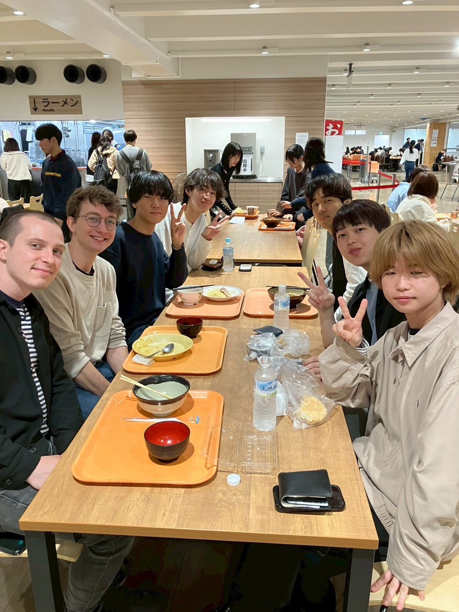
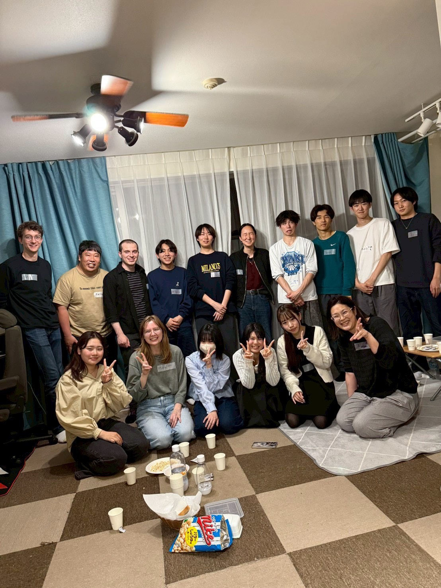
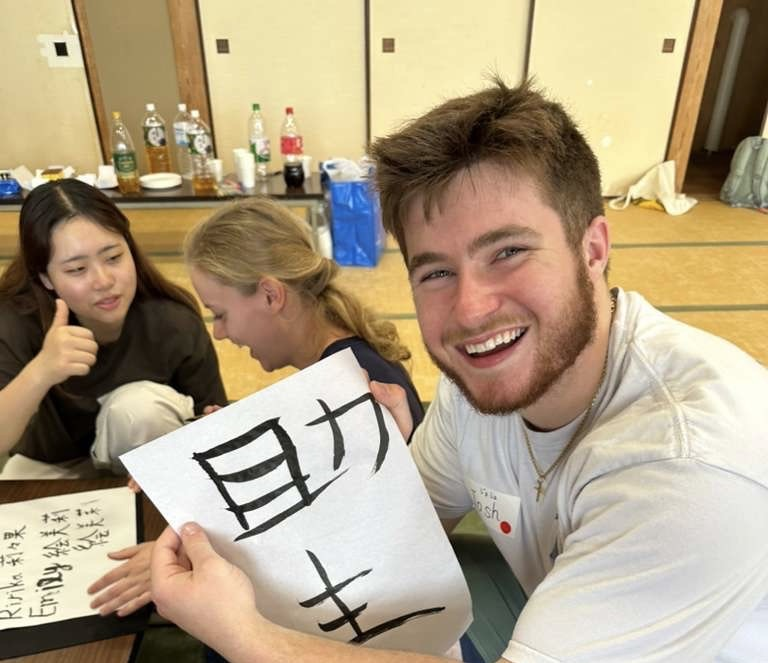
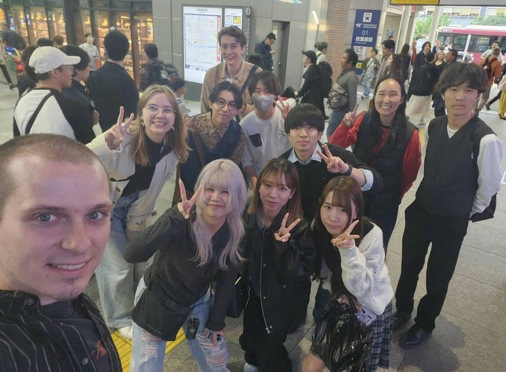

ランチテーブル
毎週木曜日、お昼休みににヒルトップ4階うどん屋さんの近くで開催します。日本語が喋れるスタッフもいるので積極的に話しましょう！！

シャベラナイト
スタッフの家で夕ご飯を食べたり、ゲームをしたりします。またディスカッションをしてメンバーをよく知ることができます。

カルチャーデー
日本のことをあまり知らない外国人に向けて日本の伝統文化を紹介します。直近では書道、折り紙、コマ回しを紹介しました。

ランダムトリップ
新宿駅に集合して、そこから一本で行ける駅の中からをさいころで決めて観光します。その場で決まるので予測不能です（笑）